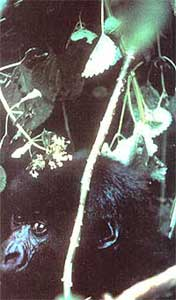

Big, intelligent eyes and soft, brown, puppylike fur make the curious and friendly gorilla youngsters a delight to behold. One wants to (and perhaps could) give them a hug, but all such contact is discouraged for fear of transmission of human diseases.